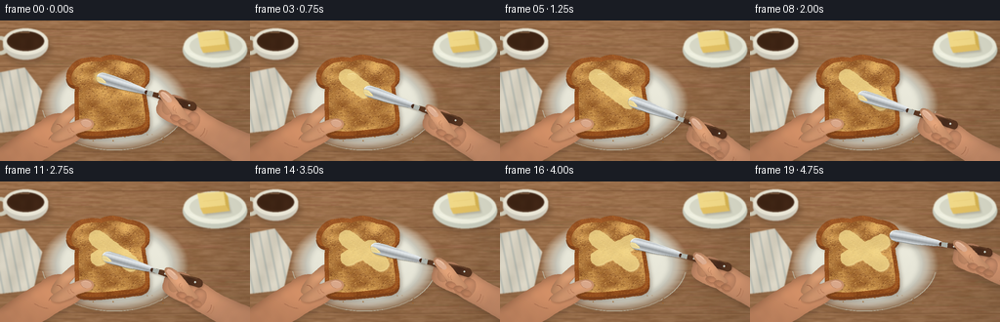
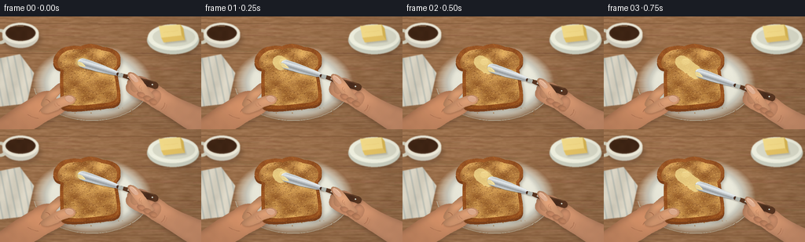

CODING AGENTS AS PIXEL WORLD MODELS
traex/GPT-6.1-Sol · motion_rationality_0004
点击播放 · 原生 RGB 像素
逐轮保存的候选
回放视频、检查图与代码变化。
每份候选均可单独播放。实际图片检查记录在下方工具轨迹中。
候选 01播放与检查图
点击播放 · 原生 RGB 像素


展开代码变化
--- 上一保存版本
+++ 本次保存版本
@@ -0,0 +1,450 @@
+from pathlib import Path
+import math
+import numpy as np
+from PIL import Image, ImageDraw, ImageFilter
+import artifact_io
+
+# A self-contained, supersampled, deterministic material-and-motion renderer.
+ROOT = Path(__file__).resolve().parent
+S = 3
+W, H = 256*S, 144*S
+rng = np.random.default_rng(202611)
+Y, X = np.mgrid[0:H, 0:W].astype(np.float32)
+X /= S; Y /= S
+
+def noise_grid(nx, ny, seed):
+ r = np.random.default_rng(seed)
+ a = Image.fromarray(np.uint8(r.random((ny,nx))*255))
+ return np.asarray(a.resize((W,H), Image.Resampling.BICUBIC),dtype=np.float32)/255-.5
+
+fine = noise_grid(W, H, 17)
+soft = noise_grid(38,24,18)
+large = noise_grid(12,8,19)
+
+def mask_path(points):
+ im=Image.new('L',(W,H),0)
+ ImageDraw.Draw(im).polygon([(x*S,y*S) for x,y in points],fill=255)
+ return im
+
+def bezpath(start, curves):
+ pts=[start]; p=np.array(start,dtype=float)
+ for c1,c2,end in curves:
+ c1,c2,end=np.array(c1),np.array(c2),np.array(end)
+ for t in np.linspace(0,1,17)[1:]:
+ q=(1-t)**3*p+3*(1-t)**2*t*c1+3*(1-t)*t*t*c2+t**3*end
+ pts.append(tuple(q))
+ p=end
+ return pts
+
+def ellipse_mask(box):
+ im=Image.new('L',(W,H),0)
+ ImageDraw.Draw(im).ellipse(tuple(v*S for v in box),fill=255)
+ return im
+
+def put_color(im, mask, color, alpha=1):
+ if isinstance(color,np.ndarray):
+ patch=Image.fromarray(np.uint8(np.clip(color,0,255)))
+ else:
+ patch=Image.new('RGB',(W,H),color)
+ if alpha != 1:
+ mask=mask.point(lambda a: round(a*alpha))
+ im.paste(patch,(0,0),mask)
+
+def shadow(im, mask, dx=2,dy=3,blur=2,opacity=.22):
+ displaced=Image.new('L',(W,H),0)
+ displaced.paste(mask,(round(dx*S),round(dy*S)))
+ displaced=displaced.filter(ImageFilter.GaussianBlur(blur*S))
+ put_color(im,displaced,(55,35,21),opacity)
+
+def line(im, points, fill, width=1):
+ ImageDraw.Draw(im).line([(p[0]*S,p[1]*S) for p in points],fill=fill,width=max(1,round(width*S)),joint='curve')
+
+def smooth_line(im,start,curves,fill,width=1):
+ line(im,bezpath(start,curves),fill,width)
+
+def skin(im,points,base=(192,132,95),seed=0,highlight=None):
+ m=mask_path(points)
+ height=np.asarray(m.filter(ImageFilter.GaussianBlur(3.6*S)),dtype=np.float32)/255
+ gy,gx=np.gradient(height)
+ lighting=.84+.17*height-.98*gx-1.25*gy
+ lighting+=.009*fine+.021*soft
+ if highlight:
+ cx,cy,rx,ry=highlight
+ lighting+=.11*np.exp(-((X-cx)/rx)**2-((Y-cy)/ry)**2)
+ rgb=np.empty((H,W,3),np.float32)
+ for k in range(3):
+ rgb[:,:,k]=base[k]*lighting
+ rgb[:,:,0]+=2*large
+ rgb[:,:,2]-=2*large
+ put_color(im,m,rgb)
+ return m
+
+# Slightly oblique tabletop, with individual open-grained oak boards.
+woodnoise=20*noise_grid(20,100,23)+9*noise_grid(70,144,24)+3*fine
+woodgrain=3.2*np.sin(Y*3.0+.075*X+4*noise_grid(12,52,25))
+woodgrain+=2.4*np.sin(Y*7.3+.025*X+5*soft)
+illum=1-.10*(X/256)+.045*(1-Y/144)
+wood=np.empty((H,W,3),np.float32)
+for k,c in enumerate((158,114,77)):
+ wood[:,:,k]=(c+woodnoise+woodgrain)*illum
+background=Image.fromarray(np.uint8(np.clip(wood,0,255)))
+for y in [7,46,89,132]:
+ points=[(x,y+.014*x+1.2*math.sin(x*.014+y)) for x in np.linspace(0,256,120)]
+ line(background,points,(118,79,49),.7)
+ line(background,[(x,yy+1) for x,yy in points],(175,129,88),.4)
+# Sparse long grain, not a tiled texture.
+for i in range(160):
+ x=rng.uniform(0,255); y=rng.uniform(0,144); leng=rng.uniform(8,80)
+ pts=[(x+t,y+.011*t+.22*math.sin(t*.15)) for t in np.linspace(0,leng,15)]
+ line(background,pts,(int(rng.uniform(123,153)),int(rng.uniform(84,109)),65),.23)
+
+# An ivory woven napkin at the left, partly outside the close-up.
+clothpts=[(-10,55),(25,48),(43,72),(34,111),(-9,116)]
+cm=mask_path(clothpts)
+shadow(background,cm,1,2,2,.16)
+cloth=np.stack([222+6*soft+2*fine,216+6*soft+2*fine,199+6*soft+2*fine],axis=2)
+clothshade=7*np.cos((X+Y*.3)*.22)
+cloth+=clothshade[:,:,None]
+put_color(background,cm,cloth)
+cl=Image.new('RGB',(W,H),(0,0,0)); cd=ImageDraw.Draw(cl)
+for x in range(-20,51,9):
+ cd.line(((x*S,42*S),((x+15)*S,117*S)),fill=(118,143,149),width=2*S)
+clmask=Image.new('L',(W,H),0); cdd=ImageDraw.Draw(clmask)
+for x in range(-20,51,9):
+ cdd.line(((x*S,42*S),((x+15)*S,117*S)),fill=75,width=2*S)
+clmask=Image.fromarray(np.uint8(np.asarray(clmask,dtype=float)*np.asarray(cm)/255))
+background.paste(cl,(0,0),clmask)
+
+# Background coffee and butter dish are softly out of the focal plane.
+props=background.copy()
+cm=ellipse_mask((1,10,52,40)); shadow(props,cm,1,4,3,.28)
+# cup handle
+m=ellipse_mask((-9,16,10,35)); put_color(props,m,(218,214,194))
+m=ellipse_mask((-5,20,5,31)); put_color(props,m,(151,111,77))
+# Ceramic cup body and rim.
+m=ellipse_mask((3,10,49,40));
+z=np.clip((Y-10)/30,0,1)
+put_color(props,m,np.stack([237-29*z,235-31*z,220-31*z],axis=2))
+m=ellipse_mask((3,8,49,35)); put_color(props,m,(243,239,222))
+m=ellipse_mask((7,11,45,31)); put_color(props,m,(71,43,26))
+m=ellipse_mask((9,12,44,29));
+coffee=np.stack([65+6*soft,38+4*soft,21+3*soft],axis=2)
+put_color(props,m,coffee)
+line(props,[(13,13),(21,12),(30,12)],(176,135,93),.65)
+line(props,[(8,25),(10,28),(19,31),(32,32)],(255,248,225),.7)
+# Small butter saucer and rectangular butter block at the back right.
+m=ellipse_mask((187,12,253,48)); shadow(props,m,2,4,2.5,.22)
+put_color(props,m,(205,209,194))
+m=ellipse_mask((188,10,252,43)); put_color(props,m,(242,243,226))
+m=ellipse_mask((194,14,248,38)); put_color(props,m,(221,222,204))
+line(props,[(194,33),(206,39),(229,41),(244,36)],(252,252,238),1)
+block=mask_path([(204,18),(231,16),(235,30),(208,33)])
+shadow(props,block,2,2,1,.20)
+put_color(props,mask_path([(205,19),(231,17),(235,30),(209,33)]),(218,178,78))
+put_color(props,mask_path([(202,12),(229,10),(231,24),(205,27)]),(249,224,140))
+put_color(props,mask_path([(205,27),(231,24),(235,30),(208,33)]),(233,198,102))
+put_color(props,mask_path([(229,10),(233,15),(235,30),(231,24)]),(220,184,84))
+line(props,[(203,13),(228,11)],(255,238,172),.8)
+line(props,[(208,20),(220,19),(226,18)],(237,205,116),.35)
+background=props.filter(ImageFilter.GaussianBlur(.48*S))
+
+# Matte ceramic plate with a glazed, softly lit rim.
+pcx,pcy=117,85
+r=np.sqrt(((X-pcx)/75)**2+((Y-pcy)/48)**2)
+pm=Image.fromarray(np.uint8(np.clip((1.016-r)*1100,0,255)))
+shadow(background,pm,2,5,3,.30)
+pr=1.0-0.12*np.exp(-((r-.79)/.06)**2)+.055*np.exp(-((r-.95)/.027)**2)
+pr-=.025*(Y-pcy)/48
+pr+=.004*fine
+plate=np.stack([234*pr,233*pr,219*pr],axis=2)
+put_color(background,pm,plate)
+# Thin edge reveals the plate thickness at the lower side.
+line(background,[(117+74*math.cos(t),85+48*math.sin(t)) for t in np.linspace(.17,2.99,130)],(195,194,177),.55)
+
+# The steadying left hand is behind the bread except for its thumb.
+leftpts=bezpath((-13,143),[
+ ((0,128),(22,115),(42,103)),
+ ((48,97),(55,95),(63,95)),
+ ((67,93),(71,87),(76,85)),
+ ((81,83),(83,88),(80,93)),
+ ((78,98),(72,102),(71,105)),
+ ((79,104),(87,108),(87,114)),
+ ((86,122),(70,128),(59,134)),
+ ((46,143),(36,148),(24,153)),
+ ((10,154),(-5,153),(-13,143))])
+lm=mask_path(leftpts); shadow(background,lm,1,3,2,.20)
+skin(background,leftpts,(193,132,95),highlight=(49,115,26,16))
+# Index finger underneath the crust.
+fp=bezpath((53,109),[
+ ((56,101),(66,92),(72,88)),((75,85),(80,85),(81,89)),
+ ((82,93),(75,98),(71,103)),((65,110),(61,114),(56,116)),
+ ((52,115),(51,112),(53,109))])
+skin(background,fp,(200,143,104),highlight=(68,98,12,6))
+smooth_line(background,(58,106),[((61,106),(63,108),(64,111))],(159,99,69),.55)
+smooth_line(background,(50,122),[((53,116),(58,113),(63,113))],(164,107,75),.6)
+smooth_line(background,(35,125),[((40,128),(45,130),(49,130))],(169,110,78),.5)
+
+# Toasted bread: an irregular rounded crown, warm crust, and porous crumb.
+outline=bezpath((77,67),[
+ ((66,65),(66,54),(72,47)),
+ ((79,37),(92,37),(103,38)),
+ ((110,34),(120,34),(131,39)),
+ ((145,40),(155,47),(153,56)),
+ ((154,61),(149,64),(148,66)),
+ ((150,80),(154,97),(153,105)),
+ ((153,109),(149,113),(142,114)),
+ ((124,116),(105,119),(88,118)),
+ ((81,118),(77,115),(77,110)),
+ ((77,96),(76,79),(77,67))])
+breadmask=mask_path(outline)
+shadow(background,breadmask,2,4,2,.32)
+side=[(x,y+3.2) for x,y in outline]
+put_color(background,mask_path(side),(124,64,27))
+crust= np.stack([147+27*soft+16*large+8*fine,79+19*soft+12*large+6*fine,32+10*soft+6*large+3*fine],axis=2)
+crust+=(-7*(Y-70)/65)[:,:,None]
+put_color(background,breadmask,crust)
+inner=[(114+(x-114)*.885,77+(y-77)*.885) for x,y in outline]
+imask=mask_path(inner)
+# Tiny irregular golden cracks around the toasted perimeter.
+for i in range(480):
+ a=rng.integers(len(outline)); x,y=outline[a]
+ x=114+(x-114)*rng.uniform(.9,1.0); y=77+(y-77)*rng.uniform(.90,1)
+ ell=ellipse_mask((x-.35,y-.22,x+.75,y+.38))
+ put_color(background,ell,(182,109,46),.35)
+# Surface texture mixes fine crumbs, toast patches, and pale cell walls.
+coarse=noise_grid(23,21,45)
+medium=noise_grid(93,72,46)
+patches=noise_grid(14,11,47)
+brown=np.clip(.43+.60*coarse+.62*patches+.15*medium,0,1)
+crumb=np.empty((H,W,3),np.float32)
+for k,(lo,hi) in enumerate([(128,231),(69,178),(26,98)]):
+ crumb[:,:,k]=hi+(lo-hi)*brown+14*medium+8*fine
+crumb+=(-5*(Y-60)/60)[:,:,None]
+put_color(background,imask,crumb)
+pores=Image.new('RGBA',(W,H),(0,0,0,0)); pd=ImageDraw.Draw(pores)
+for i in range(2600):
+ x=rng.uniform(76,150); y=rng.uniform(41,115)
+ if np.asarray(imask)[min(H-1,int(y*S)),min(W-1,int(x*S))] < 200: continue
+ rr=rng.uniform(.16,.71); ry=rr*rng.uniform(.4,1)
+ shade=rng.choice([0,1,2],p=[.54,.28,.18])
+ if shade==0:
+ pd.ellipse(((x-rr)*S,(y-ry)*S,(x+rr)*S,(y+ry)*S),fill=(97,49,19,int(rng.uniform(40,125))))
+ pd.arc(((x-rr)*S,(y-ry+.15)*S,(x+rr)*S,(y+ry+.18)*S),0,150,fill=(251,204,130,105),width=1)
+ else:
+ pd.ellipse(((x-rr)*S,(y-ry)*S,(x+rr)*S,(y+ry)*S),fill=(246,195,113,int(rng.uniform(25,110))))
+background=Image.alpha_composite(background.convert('RGBA'),pores).convert('RGB')
+# A few fallen crumbs are at rest on the plate.
+for i in range(25):
+ x=rng.uniform(65,169); y=rng.uniform(108,126)
+ if np.asarray(breadmask)[int(y*S),int(x*S)]>0: continue
+ rr=rng.uniform(.22,.8)
+ m=ellipse_mask((x-rr,y-rr*.6,x+rr,y+rr*.6))
+ shadow(background,m,.4,.7,.4,.15)
+ put_color(background,m,(166,105,45))
+
+# Stable thumb rests lightly on the near left crust.
+thumbpts=bezpath((53,117),[
+ ((60,112),(68,107),(77,103)),
+ ((82,101),(90,99),(94,102)),
+ ((98,105),(96,110),(91,112)),
+ ((85,114),(79,115),(74,119)),
+ ((67,122),(60,125),(55,123)),
+ ((51,122),(51,120),(53,117))])
+
+def add_left_thumb(im):
+ m=mask_path(thumbpts); shadow(im,m,.7,1.3,.9,.20)
+ skin(im,thumbpts,(207,148,109),highlight=(78,106,17,6))
+ nail=bezpath((85,102),[
+ ((88,101),(92,102),(93,104)),((95,106),(93,109),(90,109)),
+ ((87,110),(84,108),(83,106)),((82,104),(83,103),(85,102))])
+ m=mask_path(nail)
+ put_color(im,m,(219,169,139))
+ smooth_line(im,(85,102.5),[((88,102),(91,102.5),(92.5,104))],(243,200,170),.45)
+ smooth_line(im,(83,104),[((82,106),(85,109),(88,109.5))],(177,119,88),.35)
+ smooth_line(im,(72,110),[((73,112),(74,114),(76,114))],(162,101,72),.45)
+ smooth_line(im,(69,111),[((70,114),(71,115),(72,115))],(177,115,81),.35)
+
+# Animation: two deliberate spreading passes and a small lifted return.
+# The butter persists; the toast and supporting hand do not slide.
+def trajectory(f):
+ if f<=6:
+ u=f/6
+ u=u*u*(3-2*u)
+ return 99+35*u, 58+26*u, 0, 17+3*u, True
+ if f<=9:
+ u=(f-6)/3
+ return 134-35*u,84-5*u, 5*math.sin(math.pi*u),20-4*u,False
+ if f<=17:
+ u=(f-9)/8
+ u=u*u*(3-2*u)
+ return 99+36*u,79-17*u,0,16-2*u,True
+ u=(f-17)/2
+ return 135+8*u,62-2*u,5*u,14-4*u,False
+
+traj=[trajectory(i) for i in range(20)]
+
+def butter_layer(im,f):
+ coverage=np.zeros((H,W),dtype=np.float32)
+ paths=[]
+ # Each connected segment deposits a rounded, thin ribbon of butter.
+ for i in range(1,f+1):
+ if not (traj[i][4] and traj[i-1][4]): continue
+ ax,ay=traj[i-1][:2]; bx,by=traj[i][:2]
+ vx,vy=bx-ax,by-ay
+ tt=np.clip(((X-ax)*vx+(Y-ay)*vy)/(vx*vx+vy*vy+1.e-9),0,1)
+ dist=np.sqrt((X-ax-tt*vx)**2+(Y-ay-tt*vy)**2)
+ width=8.7 if i<7 else 8.4
+ edge=width+.48*soft+1.0*medium
+ deposit=np.clip((edge-dist)*1.7,0,1)
+ coverage=np.maximum(coverage,deposit)
+ paths.append((ax,ay,bx,by))
+ # Starting knob of softened butter; it flattens visibly with the first pass.
+ patamount=max(.08,1-f/6)
+ knob=np.exp(-(((X-104)/8)**4+((Y-58)/5.2)**4))
+ coverage=np.maximum(coverage,knob*(.65+.35*patamount))
+ coverage*=np.asarray(imask,dtype=np.float32)/255
+ # Delicate spread ridges run along the actual knife strokes.
+ ridges=np.sin((Y-.72*X)*5.7+soft*2)
+ ridges2=np.sin((Y+.46*X)*6.8+soft*2)
+ ridge=(ridges*(f<9)+ridges2*(f>=9))
+ cream=np.stack([245+2*ridge+2*medium,
+ 221+3*ridge+3*medium,
+ 143+5*ridge+4*medium],axis=2)
+ m=Image.fromarray(np.uint8(np.clip(coverage*(.79+.035*soft)*255,0,255)))
+ put_color(im,m,cream)
+ # Real butter is neither perfectly opaque nor a painted flat stripe.
+ bm=Image.fromarray(np.uint8(coverage*255))
+ bblur=np.asarray(bm.filter(ImageFilter.GaussianBlur(.65*S)),dtype=float)/255
+ gy,gx=np.gradient(bblur)
+ shine=np.clip(-gx-gy,0,.4)*3
+ sm=Image.fromarray(np.uint8(np.clip(shine*110,0,100)))
+ put_color(im,sm,(255,239,177))
+ if patamount>.12:
+ pat=ellipse_mask((99,54,109,60+patamount*3))
+ put_color(im,pat,(247,224,152),patamount*.62)
+ line(im,[(100,55),(105,54.5),(108,55)],(255,241,186),.55*patamount)
+ # Short, hair-fine drag lines, clipped to the spread itself.
+ gr=Image.new('L',(W,H),0); gd=ImageDraw.Draw(gr)
+ for ax,ay,bx,by in paths:
+ vx,vy=bx-ax,by-ay; L=math.hypot(vx,vy)+1e-6
+ for offset in [-5,-2.6,1.1,4.4]:
+ dx,dy=-vy/L*offset,vx/L*offset
+ gd.line(((ax+dx)*S,(ay+dy)*S,(bx+dx)*S,(by+dy)*S),fill=40,width=1)
+ gm=np.asarray(gr,dtype=float)*coverage
+ put_color(im,Image.fromarray(np.uint8(gm)),(255,238,176))
+
+bladepts=bezpath((0,0),[
+ ((-.6,-3),(2,-6),(7,-6.5)),
+ ((18,-7),(36,-5),(49,-3.7)),
+ ((52,-3),(55,-2),(57,-1.6)),
+ ((59,-.5),(59,1.1),(56,2)),
+ ((43,3),(22,5.5),(8,5.5)),
+ ((3,5.1),(.2,3),(0,0))])
+handlepts=bezpath((53,-2),[
+ ((65,-3),(80,-4),(101,-4.6)),
+ ((108,-5),(109,4),(103,4.5)),
+ ((85,4),(67,2.3),(53,2)),
+ ((51,1),(51,-1),(53,-2))])
+handbase=bezpath((68,8),[
+ ((66,3),(71,-3),(79,-5)),
+ ((86,-8),(93,-5),(97,-2)),
+ ((102,-2),(107,-2),(114,1)),
+ ((126,6),(147,9),(172,10)),
+ ((182,13),(183,41),(173,45)),
+ ((154,41),(134,34),(118,30)),
+ ((108,28),(102,26),(97,24)),
+ ((85,23),(74,21),(70,17)),
+ ((68,15),(67,11),(68,8))])
+
+def knife_and_hand(im,f):
+ tx,ty,lift,ang,_=traj[f]
+ # Lift is toward the camera; contact shadow separates accordingly.
+ ty-=lift
+ a=math.radians(ang); ca,sa=math.cos(a),math.sin(a)
+ def trans(points):
+ return [(tx+x*ca-y*sa,ty+x*sa+y*ca) for x,y in points]
+ def pt(x,y): return tx+x*ca-y*sa,ty+x*sa+y*ca
+ hm=mask_path(trans(handbase)); shadow(im,hm,1.7,4+lift*.5,2.0+lift*.15,.22)
+ skin(im,trans(handbase),(195,137,102),highlight=pt(107,12)+(30,13))
+ # Rounded proximal finger forms, behind the handle.
+ for j,(xx,yy) in enumerate([(78,1),(88,3),(98,6),(106,10)]):
+ finger=bezpath((xx-5,yy+1),[
+ ((xx-5,yy-6),(xx+3,yy-7),(xx+7,yy-2)),
+ ((xx+10,yy+3),(xx+8,yy+12),(xx+3,yy+15)),
+ ((xx-2,yy+16),(xx-7,yy+11),(xx-5,yy+1))])
+ skin(im,trans(finger),(199-j*2,140-j*2,103-j),highlight=pt(xx,yy)+(8,5))
+ # Knife's cast shadow tracks its elevation over the bread.
+ bm=mask_path(trans(bladepts)); shadow(im,bm,.7,1.1+lift*.55,.65+lift*.21,.30 if lift<1 else .18)
+ hh=mask_path(trans(handlepts)); shadow(im,hh,.6,1.4,1,.23)
+ # Inverse coordinates give a metallic reflectance across the blade.
+ U=(X-tx)*ca+(Y-ty)*sa; V=-(X-tx)*sa+(Y-ty)*ca
+ metalbright=184+43*np.exp(-((V+3)/1.8)**2)-32*np.exp(-((V-1)/1.1)**2)+30*np.exp(-((V-3.8)/.45)**2)
+ metalbright+=.16*U+.55*fine+1.3*np.sin(U*1.8)
+ bladecolor=np.stack([metalbright-4,metalbright+1,metalbright+4],axis=2)
+ put_color(im,bm,bladecolor)
+ smooth_line(im,pt(1,-1),[(pt(0,-4),pt(3,-6),pt(8,-6))],(244,246,237),.6)
+ line(im,trans([(8,-6),(27,-5.8),(48,-3.7)]),(235,238,232),.55)
+ line(im,trans([(5,4.8),(25,4.9),(49,2.7)]),(123,132,132),.55)
+ # Narrow wooden handle, with a ferrule and two tiny steel rivets.
+ hc=np.stack([81+9*np.sin(U*.32)+2*fine,49+6*np.sin(U*.32)+2*fine,31+3*np.sin(U*.32)+fine],axis=2)
+ put_color(im,hh,hc)
+ ferrule=mask_path(trans([(54,-2.1),(60,-2.5),(60,2.4),(54,2.1)]))
+ put_color(im,ferrule,(175,181,174))
+ line(im,trans([(61,-2.5),(100,-4)]),(128,86,52),.65)
+ for u in [67,99]:
+ cx,cy=pt(u,0)
+ put_color(im,ellipse_mask((cx-1,cy-.9,cx+1,cy+.9)),(189,194,186))
+ put_color(im,ellipse_mask((cx-.35,cy-.65,cx+.6,cy+.1)),(237,239,223))
+ # Butter clings to the knife's rounded leading edge.
+ if f<18:
+ bpts=trans([(0,1),(1,-1),(5,-.7),(10,1.6),(11,3.4),(6,4.4),(2,3.7)])
+ put_color(im,mask_path(bpts),(244,220,143),.85)
+ line(im,trans([(1,.7),(5,.2),(9,2)]),(255,237,175),.55)
+ # Thumb pressing the handle, clearly separate from the curled fingers.
+ th=bezpath((103,12),[
+ ((98,9),(92,3),(84,-2)),
+ ((78,-6),(73,-8),(69,-7)),
+ ((65,-7),(64,-3),(68,.5)),
+ ((73,5),(80,9),(85,14)),
+ ((89,19),(100,20),(105,16)),
+ ((107,15),(106,13),(103,12))])
+ tm=mask_path(trans(th)); shadow(im,tm,.3,.65,.5,.15)
+ skin(im,trans(th),(211,152,113),highlight=pt(83,4)+(13,7))
+ nail=bezpath((69,-5.5),[
+ ((72,-6),(78,-3),(80,-.5)),
+ ((82,2),(79,4),(76,3)),
+ ((73,2),(69,0),(68,-2)),
+ ((67,-4),(68,-5),(69,-5.5))])
+ put_color(im,mask_path(trans(nail)),(225,177,148))
+ line(im,trans([(69,-4.8),(72,-4.5),(77,-1.9)]),(246,205,173),.55)
+ smooth_line(im,pt(68,-2),[(pt(69,0),pt(73,2),pt(76,3))],(175,117,87),.4)
+ smooth_line(im,pt(85,5),[(pt(83,7),pt(84,9),pt(86,10))],(167,106,75),.45)
+ smooth_line(im,pt(87,7),[(pt(86,9),pt(88,11),pt(89,11.5))],(181,119,85),.35)
+ # Distal finger pads curling under the grip on its far side.
+ for j,(xx,yy) in enumerate([(90,17),(99,19),(107,21)]):
+ fp=bezpath((xx-4,yy-3),[
+ ((xx,yy-5),(xx+5,yy-3),(xx+5,yy)),
+ ((xx+5,yy+4),(xx,yy+6),(xx-4,yy+3)),
+ ((xx-7,yy+1),(xx-7,yy-1),(xx-4,yy-3))])
+ skin(im,trans(fp),(192-j*3,131-j*2,96-j*2),highlight=pt(xx,yy)+(7,4))
+ smooth_line(im,pt(xx-4,yy+1),[(pt(xx-2,yy+3),pt(xx+1,yy+3),pt(xx+3,yy+2))],(149,93,65),.4)
+ # Soft wrist creases and fine natural skin texture, no hard outlines.
+ smooth_line(im,pt(121,18),[(pt(122,21),pt(121,25),pt(119,27))],(171,111,79),.55)
+ smooth_line(im,pt(124,19),[(pt(125,22),pt(124,25),pt(123,27))],(181,119,86),.35)
+
+frames=[]
+# Fixed focus, stable illumination, no artificially jittering scene texture.
+vig=1-.10*((X-127)/181)**2-.065*((Y-76)/118)**2
+for f in range(20):
+ im=background.copy()
+ butter_layer(im,f)
+ add_left_thumb(im)
+ knife_and_hand(im,f)
+ arr=np.asarray(im,dtype=np.float32)*vig[:,:,None]
+ # Mild photographic response preserves warm highlights without clipping.
+ arr=np.clip(arr,0,255).astype(np.uint8)
+ frame=Image.fromarray(arr).resize((256,144),Image.Resampling.LANCZOS)
+ frames.append(np.asarray(frame))
+frames=np.stack(frames).astype(np.uint8)
+artifact_io.save(frames,ROOT)
+print('Saved',frames.shape,frames.dtype,'to',ROOT)
可观测工具轨迹
实际执行的命令与返回图片。
命令 1exit 0
/bin/bash -lc 'ls -la && cat prompt.txt && cat GENERATION_RULES.md && cat task_spec.json'
命令 2exit 0
/bin/bash -lc "cat artifact_io.py && python - <<'PY'
import PIL,numpy
print('PIL', PIL.__version__)
PY"命令 3exit 0
/bin/bash -lc "cat > generate.py <<'PY'
from pathlib import Path
import math
import numpy as np
from PIL import Image, ImageDraw, ImageFilter
import artifact_io
# A self-contained, supersampled, deterministic material-and-motion renderer.
ROOT = Path(__file__).resolve().parent
S = 3
W, H = 256*S, 144*S
rng = np.random.default_rng(202611)
Y, X = np.mgrid[0:H, 0:W].astype(np.float32)
X /= S; Y /= S
def noise_grid(nx, ny, seed):
r = np.random.default_rng(seed)
a = Image.fromarray(np.uint8(r.random((ny,nx))*255))
return np.asarray(a.resize((W,H), Image.Resampling.BICUBIC),dtype=np.float32)/255-.5
fine = noise_grid(W, H, 17)
soft = noise_grid(38,24,18)
large = noise_grid(12,8,19)
def mask_path(points):
im=Image.new('L',(W,H),0)
ImageDraw.Draw(im).polygon([(x*S,y*S) for x,y in points],fill=255)
return im
def bezpath(start, curves):
pts=[start]; p=np.array(start,dtype=float)
for c1,c2,end in curves:
c1,c2,end=np.array(c1),np.array(c2),np.array(end)
for t in np.linspace(0,1,17)[1:]:
q=(1-t)**3*p+3*(1-t)**2*t*c1+3*(1-t)*t*t*c2+t**3*end
pts.append(tuple(q))
p=end
return pts
def ellipse_mask(box):
im=Image.new('L',(W,H),0)
ImageDraw.Draw(im).ellipse(tuple(v*S for v in box),fill=255)
return im
def put_color(im, mask, color, alpha=1):
if isinstance(color,np.ndarray):
patch=Image.fromarray(np.uint8(np.clip(color,0,255)))
else:
patch=Image.new('RGB',(W,H),color)
if alpha "'!= 1:
mask=mask.point(lambda a: round(a*alpha))
im.paste(patch,(0,0),mask)
def shadow(im, mask, dx=2,dy=3,blur=2,opacity=.22):
displaced=Image.new('"'L',(W,H),0)
displaced.paste(mask,(round(dx*S),round(dy*S)))
displaced=displaced.filter(ImageFilter.GaussianBlur(blur*S))
put_color(im,displaced,(55,35,21),opacity)
def line(im, points, fill, width=1):
ImageDraw.Draw(im).line([(p[0]*S,p[1]*S) for p in points],fill=fill,width=max(1,round(width*S)),joint='curve')
def smooth_line(im,start,curves,fill,width=1):
line(im,bezpath(start,curves),fill,width)
def skin(im,points,base=(192,132,95),seed=0,highlight=None):
m=mask_path(points)
height=np.asarray(m.filter(ImageFilter.GaussianBlur(3.6*S)),dtype=np.float32)/255
gy,gx=np.gradient(height)
lighting=.84+.17*height-.98*gx-1.25*gy
lighting+=.009*fine+.021*soft
if highlight:
cx,cy,rx,ry=highlight
lighting+=.11*np.exp(-((X-cx)/rx)**2-((Y-cy)/ry)**2)
rgb=np.empty((H,W,3),np.float32)
for k in range(3):
rgb[:,:,k]=base[k]*lighting
rgb[:,:,0]+=2*large
rgb[:,:,2]-=2*large
put_color(im,m,rgb)
return m
# Slightly oblique tabletop, with individual open-grained oak boards.
woodnoise=20*noise_grid(20,100,23)+9*noise_grid(70,144,24)+3*fine
woodgrain=3.2*np.sin(Y*3.0+.075*X+4*noise_grid(12,52,25))
woodgrain+=2.4*np.sin(Y*7.3+.025*X+5*soft)
illum=1-.10*(X/256)+.045*(1-Y/144)
wood=np.empty((H,W,3),np.float32)
for k,c in enumerate((158,114,77)):
wood[:,:,k]=(c+woodnoise+woodgrain)*illum
background=Image.fromarray(np.uint8(np.clip(wood,0,255)))
for y in [7,46,89,132]:
points=[(x,y+.014*x+1.2*math.sin(x*.014+y)) for x in np.linspace(0,256,120)]
line(background,points,(118,79,49),.7)
line(background,[(x,yy+1) for x,yy in points],(175,129,88),.4)
# Sparse long grain, not a tiled texture.
for i in range(160):
x=rng.uniform(0,255); y=rng.uniform(0,144); leng=rng.uniform(8,80)
pts=[(x+t,y+.011*t+.22*math.sin(t*.15)) for t in np.linspace(0,leng,15)]
line(background,pts,(int(rng.uniform(123,153)),int(rng.uniform(84,109)),65),.23)
# An ivory woven napkin at the left, partly outside the close-up.
clothpts=[(-10,55),(25,48),(43,72),(34,111),(-9,116)]
cm=mask_path(clothpts)
shadow(background,cm,1,2,2,.16)
cloth=np.stack([222+6*soft+2*fine,216+6*soft+2*fine,199+6*soft+2*fine],axis=2)
clothshade=7*np.cos((X+Y*.3)*.22)
cloth+=clothshade[:,:,None]
put_color(background,cm,cloth)
cl=Image.new('RGB',(W,H),(0,0,0)); cd=ImageDraw.Draw(cl)
for x in range(-20,51,9):
cd.line(((x*S,42*S),((x+15)*S,117*S)),fill=(118,143,149),width=2*S)
clmask=Image.new('L',(W,H),0); cdd=ImageDraw.Draw(clmask)
for x in range(-20,51,9):
cdd.line(((x*S,42*S),((x+15)*S,117*S)),fill=75,width=2*S)
clmask=Image.fromarray(np.uint8(np.asarray(clmask,dtype=float)*np.asarray(cm)/255))
background.paste(cl,(0,0),clmask)
# Background coffee and butter dish are softly out of the focal plane.
props=background.copy()
cm=ellipse_mask((1,10,52,40)); shadow(props,cm,1,4,3,.28)
# cup handle
m=ellipse_mask((-9,16,10,35)); put_color(props,m,(218,214,194))
m=ellipse_mask((-5,20,5,31)); put_color(props,m,(151,111,77))
# Ceramic cup body and rim.
m=ellipse_mask((3,10,49,40));
z=np.clip((Y-10)/30,0,1)
put_color(props,m,np.stack([237-29*z,235-31*z,220-31*z],axis=2))
m=ellipse_mask((3,8,49,35)); put_color(props,m,(243,239,222))
m=ellipse_mask((7,11,45,31)); put_color(props,m,(71,43,26))
m=ellipse_mask((9,12,44,29));
coffee=np.stack([65+6*soft,38+4*soft,21+3*soft],axis=2)
put_color(props,m,coffee)
line(props,[(13,13),(21,12),(30,12)],(176,135,93),.65)
line(props,[(8,25),(10,28),(19,31),(32,32)],(255,248,225),.7)
# Small butter saucer and rectangular butter block at the back right.
m=ellipse_mask((187,12,253,48)); shadow(props,m,2,4,2.5,.22)
put_color(props,m,(205,209,194))
m=ellipse_mask((188,10,252,43)); put_color(props,m,(242,243,226))
m=ellipse_mask((194,14,248,38)); put_color(props,m,(221,222,204))
line(props,[(194,33),(206,39),(229,41),(244,36)],(252,252,238),1)
block=mask_path([(204,18),(231,16),(235,30),(208,33)])
shadow(props,block,2,2,1,.20)
put_color(props,mask_path([(205,19),(231,17),(235,30),(209,33)]),(218,178,78))
put_color(props,mask_path([(202,12),(229,10),(231,24),(205,27)]),(249,224,140))
put_color(props,mask_path([(205,27),(231,24),(235,30),(208,33)]),(233,198,102))
put_color(props,mask_path([(229,10),(233,15),(235,30),(231,24)]),(220,184,84))
line(props,[(203,13),(228,11)],(255,238,172),.8)
line(props,[(208,20),(220,19),(226,18)],(237,205,116),.35)
background=props.filter(ImageFilter.GaussianBlur(.48*S))
# Matte ceramic plate with a glazed, softly lit rim.
pcx,pcy=117,85
r=np.sqrt(((X-pcx)/75)**2+((Y-pcy)/48)**2)
pm=Image.fromarray(np.uint8(np.clip((1.016-r)*1100,0,255)))
shadow(background,pm,2,5,3,.30)
pr=1.0-0.12*np.exp(-((r-.79)/.06)**2)+.055*np.exp(-((r-.95)/.027)**2)
pr-=.025*(Y-pcy)/48
pr+=.004*fine
plate=np.stack([234*pr,233*pr,219*pr],axis=2)
put_color(background,pm,plate)
# Thin edge reveals the plate thickness at the lower side.
line(background,[(117+74*math.cos(t),85+48*math.sin(t)) for t in np.linspace(.17,2.99,130)],(195,194,177),.55)
# The steadying left hand is behind the bread except for its thumb.
leftpts=bezpath((-13,143),[
((0,128),(22,115),(42,103)),
((48,97),(55,95),(63,95)),
((67,93),(71,87),(76,85)),
((81,83),(83,88),(80,93)),
((78,98),(72,102),(71,105)),
((79,104),(87,108),(87,114)),
((86,122),(70,128),(59,134)),
((46,143),(36,148),(24,153)),
((10,154),(-5,153),(-13,143))])
lm=mask_path(leftpts); shadow(background,lm,1,3,2,.20)
skin(background,leftpts,(193,132,95),highlight=(49,115,26,16))
# Index finger underneath the crust.
fp=bezpath((53,109),[
((56,101),(66,92),(72,88)),((75,85),(80,85),(81,89)),
((82,93),(75,98),(71,103)),((65,110),(61,114),(56,116)),
((52,115),(51,112),(53,109))])
skin(background,fp,(200,143,104),highlight=(68,98,12,6))
smooth_line(background,(58,106),[((61,106),(63,108),(64,111))],(159,99,69),.55)
smooth_line(background,(50,122),[((53,116),(58,113),(63,113))],(164,107,75),.6)
smooth_line(background,(35,125),[((40,128),(45,130),(49,130))],(169,110,78),.5)
# Toasted bread: an irregular rounded crown, warm crust, and porous crumb.
outline=bezpath((77,67),[
((66,65),(66,54),(72,47)),
((79,37),(92,37),(103,38)),
((110,34),(120,34),(131,39)),
((145,40),(155,47),(153,56)),
((154,61),(149,64),(148,66)),
((150,80),(154,97),(153,105)),
((153,109),(149,113),(142,114)),
((124,116),(105,119),(88,118)),
((81,118),(77,115),(77,110)),
((77,96),(76,79),(77,67))])
breadmask=mask_path(outline)
shadow(background,breadmask,2,4,2,.32)
side=[(x,y+3.2) for x,y in outline]
put_color(background,mask_path(side),(124,64,27))
crust= np.stack([147+27*soft+16*large+8*fine,79+19*soft+12*large+6*fine,32+10*soft+6*large+3*fine],axis=2)
crust+=(-7*(Y-70)/65)[:,:,None]
put_color(background,breadmask,crust)
inner=[(114+(x-114)*.885,77+(y-77)*.885) for x,y in outline]
imask=mask_path(inner)
# Tiny irregular golden cracks around the toasted perimeter.
for i in range(480):
a=rng.integers(len(outline)); x,y=outline[a]
x=114+(x-114)*rng.uniform(.9,1.0); y=77+(y-77)*rng.uniform(.90,1)
ell=ellipse_mask((x-.35,y-.22,x+.75,y+.38))
put_color(background,ell,(182,109,46),.35)
# Surface texture mixes fine crumbs, toast patches, and pale cell walls.
coarse=noise_grid(23,21,45)
medium=noise_grid(93,72,46)
patches=noise_grid(14,11,47)
brown=np.clip(.43+.60*coarse+.62*patches+.15*medium,0,1)
crumb=np.empty((H,W,3),np.float32)
for k,(lo,hi) in enumerate([(128,231),(69,178),(26,98)]):
crumb[:,:,k]=hi+(lo-hi)*brown+14*medium+8*fine
crumb+=(-5*(Y-60)/60)[:,:,None]
put_color(background,imask,crumb)
pores=Image.new('RGBA',(W,H),(0,0,0,0)); pd=ImageDraw.Draw(pores)
for i in range(2600):
x=rng.uniform(76,150); y=rng.uniform(41,115)
if np.asarray(imask)[min(H-1,int(y*S)),min(W-1,int(x*S))] < 200: continue
rr=rng.uniform(.16,.71); ry=rr*rng.uniform(.4,1)
shade=rng.choice([0,1,2],p=[.54,.28,.18])
if shade==0:
pd.ellipse(((x-rr)*S,(y-ry)*S,(x+rr)*S,(y+ry)*S),fill=(97,49,19,int(rng.uniform(40,125))))
pd.arc(((x-rr)*S,(y-ry+.15)*S,(x+rr)*S,(y+ry+.18)*S),0,150,fill=(251,204,130,105),width=1)
else:
pd.ellipse(((x-rr)*S,(y-ry)*S,(x+rr)*S,(y+ry)*S),fill=(246,195,113,int(rng.uniform(25,110))))
background=Image.alpha_composite(background.convert('RGBA'),pores).convert('RGB')
# A few fallen crumbs are at rest on the plate.
for i in range(25):
x=rng.uniform(65,169); y=rng.uniform(108,126)
if np.asarray(breadmask)[int(y*S),int(x*S)]>0: continue
rr=rng.uniform(.22,.8)
m=ellipse_mask((x-rr,y-rr*.6,x+rr,y+rr*.6))
shadow(background,m,.4,.7,.4,.15)
put_color(background,m,(166,105,45))
# Stable thumb rests lightly on the near left crust.
thumbpts=bezpath((53,117),[
((60,112),(68,107),(77,103)),
((82,101),(90,99),(94,102)),
((98,105),(96,110),(91,112)),
((85,114),(79,115),(74,119)),
((67,122),(60,125),(55,123)),
((51,122),(51,120),(53,117))])
def add_left_thumb(im):
m=mask_path(thumbpts); shadow(im,m,.7,1.3,.9,.20)
skin(im,thumbpts,(207,148,109),highlight=(78,106,17,6))
nail=bezpath((85,102),[
((88,101),(92,102),(93,104)),((95,106),(93,109),(90,109)),
((87,110),(84,108),(83,106)),((82,104),(83,103),(85,102))])
m=mask_path(nail)
put_color(im,m,(219,169,139))
smooth_line(im,(85,102.5),[((88,102),(91,102.5),(92.5,104))],(243,200,170),.45)
smooth_line(im,(83,104),[((82,106),(85,109),(88,109.5))],(177,119,88),.35)
smooth_line(im,(72,110),[((73,112),(74,114),(76,114))],(162,101,72),.45)
smooth_line(im,(69,111),[((70,114),(71,115),(72,115))],(177,115,81),.35)
# Animation: two deliberate spreading passes and a small lifted return.
# The butter persists; the toast and supporting hand do not slide.
def trajectory(f):
if f<=6:
u=f/6
u=u*u*(3-2*u)
return 99+35*u, 58+26*u, 0, 17+3*u, True
if f<=9:
u=(f-6)/3
return 134-35*u,84-5*u, 5*math.sin(math.pi*u),20-4*u,False
if f<=17:
u=(f-9)/8
u=u*u*(3-2*u)
return 99+36*u,79-17*u,0,16-2*u,True
u=(f-17)/2
return 135+8*u,62-2*u,5*u,14-4*u,False
traj=[trajectory(i) for i in range(20)]
def butter_layer(im,f):
coverage=np.zeros((H,W),dtype=np.float32)
paths=[]
# Each connected segment deposits a rounded, thin ribbon of butter.
for i in range(1,f+1):
if not (traj[i][4] and traj[i-1][4]): continue
ax,ay=traj[i-1][:2]; bx,by=traj[i][:2]
vx,vy=bx-ax,by-ay
tt=np.clip(((X-ax)*vx+(Y-ay)*vy)/(vx*vx+vy*vy+1.e-9),0,1)
dist=np.sqrt((X-ax-tt*vx)**2+(Y-ay-tt*vy)**2)
width=8.7 if i<7 else 8.4
edge=width+.48*soft+1.0*medium
deposit=np.clip((edge-dist)*1.7,0,1)
coverage=np.maximum(coverage,deposit)
paths.append((ax,ay,bx,by))
# Starting knob of softened butter; it flattens visibly with the first pass.
patamount=max(.08,1-f/6)
knob=np.exp(-(((X-104)/8)**4+((Y-58)/5.2)**4))
coverage=np.maximum(coverage,knob*(.65+.35*patamount))
coverage*=np.asarray(imask,dtype=np.float32)/255
# Delicate spread ridges run along the actual knife strokes.
ridges=np.sin((Y-.72*X)*5.7+soft*2)
ridges2=np.sin((Y+.46*X)*6.8+soft*2)
ridge=(ridges*(f<9)+ridges2*(f>=9))
cream=np.stack([245+2*ridge+2*medium,
221+3*ridge+3*medium,
143+5*ridge+4*medium],axis=2)
m=Image.fromarray(np.uint8(np.clip(coverage*(.79+.035*soft)*255,0,255)))
put_color(im,m,cream)
# Real butter is neither perfectly opaque nor a painted flat stripe.
bm=Image.fromarray(np.uint8(coverage*255))
bblur=np.asarray(bm.filter(ImageFilter.GaussianBlur(.65*S)),dtype=float)/255
gy,gx=np.gradient(bblur)
shine=np.clip(-gx-gy,0,.4)*3
sm=Image.fromarray(np.uint8(np.clip(shine*110,0,100)))
put_color(im,sm,(255,239,177))
if patamount>.12:
pat=ellipse_mask((99,54,109,60+patamount*3))
put_color(im,pat,(247,224,152),patamount*.62)
line(im,[(100,55),(105,54.5),(108,55)],(255,241,186),.55*patamount)
# Short, hair-fine drag lines, clipped to the spread itself.
gr=Image.new('L',(W,H),0); gd=ImageDraw.Draw(gr)
for ax,ay,bx,by in paths:
vx,vy=bx-ax,by-ay; L=math.hypot(vx,vy)+1e-6
for offset in [-5,-2.6,1.1,4.4]:
dx,dy=-vy/L*offset,vx/L*offset
gd.line(((ax+dx)*S,(ay+dy)*S,(bx+dx)*S,(by+dy)*S),fill=40,width=1)
gm=np.asarray(gr,dtype=float)*coverage
put_color(im,Image.fromarray(np.uint8(gm)),(255,238,176))
bladepts=bezpath((0,0),[
((-.6,-3),(2,-6),(7,-6.5)),
((18,-7),(36,-5),(49,-3.7)),
((52,-3),(55,-2),(57,-1.6)),
((59,-.5),(59,1.1),(56,2)),
((43,3),(22,5.5),(8,5.5)),
((3,5.1),(.2,3),(0,0))])
handlepts=bezpath((53,-2),[
((65,-3),(80,-4),(101,-4.6)),
((108,-5),(109,4),(103,4.5)),
((85,4),(67,2.3),(53,2)),
((51,1),(51,-1),(53,-2))])
handbase=bezpath((68,8),[
((66,3),(71,-3),(79,-5)),
((86,-8),(93,-5),(97,-2)),
((102,-2),(107,-2),(114,1)),
((126,6),(147,9),(172,10)),
((182,13),(183,41),(173,45)),
((154,41),(134,34),(118,30)),
((108,28),(102,26),(97,24)),
((85,23),(74,21),(70,17)),
((68,15),(67,11),(68,8))])
def knife_and_hand(im,f):
tx,ty,lift,ang,_=traj[f]
# Lift is toward the camera; contact shadow separates accordingly.
ty-=lift
a=math.radians(ang); ca,sa=math.cos(a),math.sin(a)
def trans(points):
return [(tx+x*ca-y*sa,ty+x*sa+y*ca) for x,y in points]
def pt(x,y): return tx+x*ca-y*sa,ty+x*sa+y*ca
hm=mask_path(trans(handbase)); shadow(im,hm,1.7,4+lift*.5,2.0+lift*.15,.22)
skin(im,trans(handbase),(195,137,102),highlight=pt(107,12)+(30,13))
# Rounded proximal finger forms, behind the handle.
for j,(xx,yy) in enumerate([(78,1),(88,3),(98,6),(106,10)]):
finger=bezpath((xx-5,yy+1),[
((xx-5,yy-6),(xx+3,yy-7),(xx+7,yy-2)),
((xx+10,yy+3),(xx+8,yy+12),(xx+3,yy+15)),
((xx-2,yy+16),(xx-7,yy+11),(xx-5,yy+1))])
skin(im,trans(finger),(199-j*2,140-j*2,103-j),highlight=pt(xx,yy)+(8,5))
# Knife's cast shadow tracks its elevation over the bread.
bm=mask_path(trans(bladepts)); shadow(im,bm,.7,1.1+lift*.55,.65+lift*.21,.30 if lift<1 else .18)
hh=mask_path(trans(handlepts)); shadow(im,hh,.6,1.4,1,.23)
# Inverse coordinates give a metallic reflectance across the blade.
U=(X-tx)*ca+(Y-ty)*sa; V=-(X-tx)*sa+(Y-ty)*ca
metalbright=184+43*np.exp(-((V+3)/1.8)**2)-32*np.exp(-((V-1)/1.1)**2)+30*np.exp(-((V-3.8)/.45)**2)
metalbright+=.16*U+.55*fine+1.3*np.sin(U*1.8)
bladecolor=np.stack([metalbright-4,metalbright+1,metalbright+4],axis=2)
put_color(im,bm,bladecolor)
smooth_line(im,pt(1,-1),[(pt(0,-4),pt(3,-6),pt(8,-6))],(244,246,237),.6)
line(im,trans([(8,-6),(27,-5.8),(48,-3.7)]),(235,238,232),.55)
line(im,trans([(5,4.8),(25,4.9),(49,2.7)]),(123,132,132),.55)
# Narrow wooden handle, with a ferrule and two tiny steel rivets.
hc=np.stack([81+9*np.sin(U*.32)+2*fine,49+6*np.sin(U*.32)+2*fine,31+3*np.sin(U*.32)+fine],axis=2)
put_color(im,hh,hc)
ferrule=mask_path(trans([(54,-2.1),(60,-2.5),(60,2.4),(54,2.1)]))
put_color(im,ferrule,(175,181,174))
line(im,trans([(61,-2.5),(100,-4)]),(128,86,52),.65)
for u in [67,99]:
cx,cy=pt(u,0)
put_color(im,ellipse_mask((cx-1,cy-.9,cx+1,cy+.9)),(189,194,186))
put_color(im,ellipse_mask((cx-.35,cy-.65,cx+.6,cy+.1)),(237,239,223))
# Butter clings to the knife's rounded leading edge.
if f<18:
bpts=trans([(0,1),(1,-1),(5,-.7),(10,1.6),(11,3.4),(6,4.4),(2,3.7)])
put_color(im,mask_path(bpts),(244,220,143),.85)
line(im,trans([(1,.7),(5,.2),(9,2)]),(255,237,175),.55)
# Thumb pressing the handle, clearly separate from the curled fingers.
th=bezpath((103,12),[
((98,9),(92,3),(84,-2)),
((78,-6),(73,-8),(69,-7)),
((65,-7),(64,-3),(68,.5)),
((73,5),(80,9),(85,14)),
((89,19),(100,20),(105,16)),
((107,15),(106,13),(103,12))])
tm=mask_path(trans(th)); shadow(im,tm,.3,.65,.5,.15)
skin(im,trans(th),(211,152,113),highlight=pt(83,4)+(13,7))
nail=bezpath((69,-5.5),[
((72,-6),(78,-3),(80,-.5)),
((82,2),(79,4),(76,3)),
((73,2),(69,0),(68,-2)),
((67,-4),(68,-5),(69,-5.5))])
put_color(im,mask_path(trans(nail)),(225,177,148))
line(im,trans([(69,-4.8),(72,-4.5),(77,-1.9)]),(246,205,173),.55)
smooth_line(im,pt(68,-2),[(pt(69,0),pt(73,2),pt(76,3))],(175,117,87),.4)
smooth_line(im,pt(85,5),[(pt(83,7),pt(84,9),pt(86,10))],(167,106,75),.45)
smooth_line(im,pt(87,7),[(pt(86,9),pt(88,11),pt(89,11.5))],(181,119,85),.35)
# Distal finger pads curling under the grip on its far side.
for j,(xx,yy) in enumerate([(90,17),(99,19),(107,21)]):
fp=bezpath((xx-4,yy-3),[
((xx,yy-5),(xx+5,yy-3),(xx+5,yy)),
((xx+5,yy+4),(xx,yy+6),(xx-4,yy+3)),
((xx-7,yy+1),(xx-7,yy-1),(xx-4,yy-3))])
skin(im,trans(fp),(192-j*3,131-j*2,96-j*2),highlight=pt(xx,yy)+(7,4))
smooth_line(im,pt(xx-4,yy+1),[(pt(xx-2,yy+3),pt(xx+1,yy+3),pt(xx+3,yy+2))],(149,93,65),.4)
# Soft wrist creases and fine natural skin texture, no hard outlines.
smooth_line(im,pt(121,18),[(pt(122,21),pt(121,25),pt(119,27))],(171,111,79),.55)
smooth_line(im,pt(124,19),[(pt(125,22),pt(124,25),pt(123,27))],(181,119,86),.35)
frames=[]
# Fixed focus, stable illumination, no artificially jittering scene texture.
vig=1-.10*((X-127)/181)**2-.065*((Y-76)/118)**2
for f in range(20):
im=background.copy()
butter_layer(im,f)
add_left_thumb(im)
knife_and_hand(im,f)
arr=np.asarray(im,dtype=np.float32)*vig[:,:,None]
# Mild photographic response preserves warm highlights without clipping.
arr=np.clip(arr,0,255).astype(np.uint8)
frame=Image.fromarray(arr).resize((256,144),Image.Resampling.LANCZOS)
frames.append(np.asarray(frame))
frames=np.stack(frames).astype(np.uint8)
artifact_io.save(frames,ROOT)
print('Saved',frames.shape,frames.dtype,'to',ROOT)
PY
python generate.py"命令 4exit 2
/bin/bash -lc "python - <<'PY'
from pathlib import Path
import numpy as np
from PIL import Image
p=Path('.')
a=np.load('pixels.npz')['pixels']
assert a.shape==(144,256,20)
assert len(list((p/'frames').glob('*.png')))==20
for f in (p/'frames').glob('*.png'):
im=Image.open(f)
assert im.mode=='RGB' and im.size==(256,144)
print('Verified 20 RGB frames at 256x144; player and packed pixel artifact exist.')
PY
if command -v ffmpeg >/dev/null 2>&1; then ffmpeg -v error -y -framerate 4 -i frames/%02d.png -c:v libx264 -crf 17 -pix_fmt yuv420p -movflags +faststart video.mp4; fi
ls -lh pixels.npz index.html video.mp4 2>/dev/null"保存候选 1 份；完成命令 4 次；可验证图片返回 0 张。原始 API 响应与完整日志保留在本地。